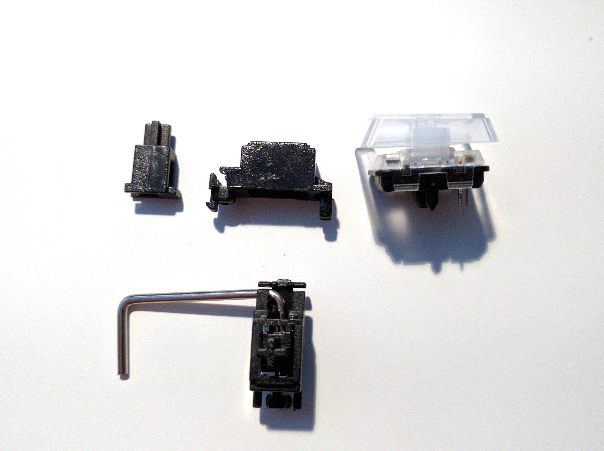
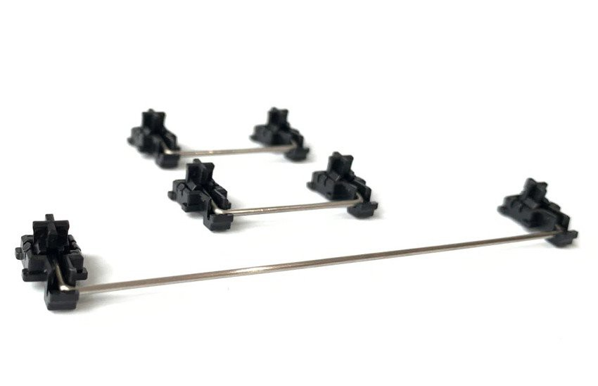

Stabilizers¶
Published on 2019-10-09 in Flounder Keyboard.
The layout I have chosen has a number of 2u, 2.5u keys, and even the 5.5u space. Such keys require additional mechanical stabilization to not feel wobbly when you hit them off-center. That usually achieved with keyboard stabilizers. I have some stabilizers left over from my previous keyboard projects, and I was hoping to use those, but today I actually took them out of the drawer and looked at them next to the chocolate switches that I have, and now I have my doubts:
The outer case of the stabilizer is actually as high as the whole key in the not-pressed state. That is not going to work very well. So what could be done?
Perhaps I would be able to cut the stabilizer a little bit, to make it lower, and to make it fit in there. But I doubt it would be enough.
Of course Kailh has a solution for you: custom low-profile stabilizers that they sell at their store:
Looks great, but wait a minute. Don’t they go into the PCB from the bottom, with a lot of space needed there for the moving parts? I don’t think this is going to work with the PCB lying flat on the desk, as I was planning to do it.
And I can’t really design the PCB before I know what kind of stabilizers I’m going to use, because I have to include the holes for the stabilizers in the design. I will need to do think about this some more, perhaps I will make a one-key PCB first as a test.